_-_National_Museum_of_Nature_and_Science,_Tokyo_-_DSC07319.JPG){kind=link}


.jpg){kind=link}
Question 1 · Array Queue State
Computer Science · Game History & Data Structures
A tiny rule makes a whole game.
Move one square. Keep the new head. Drop the old tail—unless you find food. From 1976 arcade cabinets and MS-DOS QBasic to 350 million Nokia pocket phones, discover how Snake evolved and compare the four fundamental ways programmers build it.
Grades K–12 · About 25–35 minutes · Interactive Arcade, History, Architecture & Bug Labs
01 / PLAY & NOTICE
What actually changes each time the snake moves?
Play a quick round in the interactive simulator below, switching between historical hardware displays—or toggle between the Classic Snake Queue rule (where the tail follows the head) and the 1976 Blockade Trail rule (where the tail never disappears). Use the arrow keys, WASD, or the on-screen directional pad.
Live Historical Sandbox
Play Snake Across Four Hardware Eras
Score: 0
Length: 3
Head:
(10, 10)
Tick: 100 ms
Steer (or use Arrow keys / WASD)
Observation challenge: Watch a 5-square snake move across an empty row. Do the middle 3 squares actually move, or do they sit completely still while the front adds 1 square and the back erases 1 square?
Press Start / Pause or any direction button to play. Eating ◆ adds 10 points and keeps the old tail for 1 tick.
Frame-by-frame illusion
Compare an Ordinary Move vs. a Food Move
Before Tick (Frame T)
[(2,3), (1,3), (0,3)]After Tick (Frame T + 1)
[(3,3), (2,3), (1,3)]
Key insight: Squares (2, 3) and (1, 3) never moved on the board! The program only added one new head at (3, 3) with snake.unshift(head) and erased one old tail at (0, 3) with snake.pop().
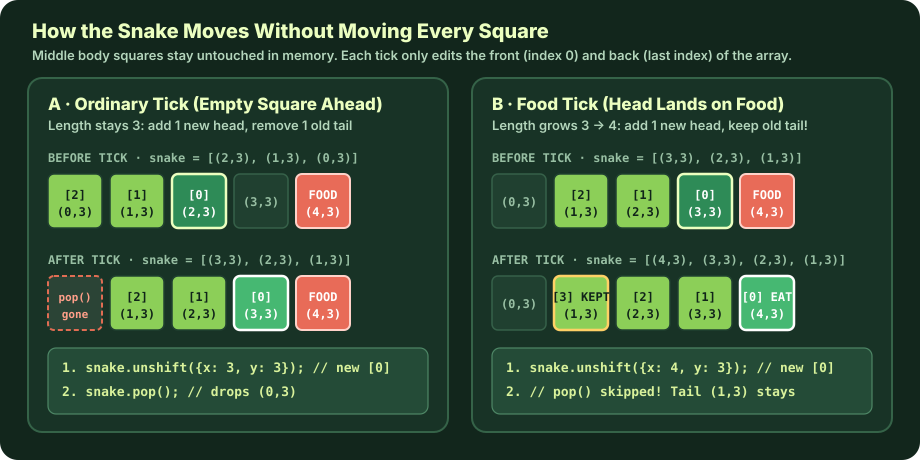
unshift(head) and pop() Instead of shifting every segment across the screen, Snake treats the body as a queue: add one square at the front (index 0) every tick, and remove one square from the back unless the new head landed on food. Click to enlarge.
ClassroomOS computer science diagram · CC BY 4.0
02 / HISTORY OF SNAKE
From 1976 arcade trails to 350 million pockets.
The game we call Snake was not invented all at once. It evolved across five decades as engineers adapted a simple grid-and-trail rule to fit the strict memory, display, and controller limits of each generation's hardware.
-
SAN DIEGO ARCADE
Gremlin's Blockade
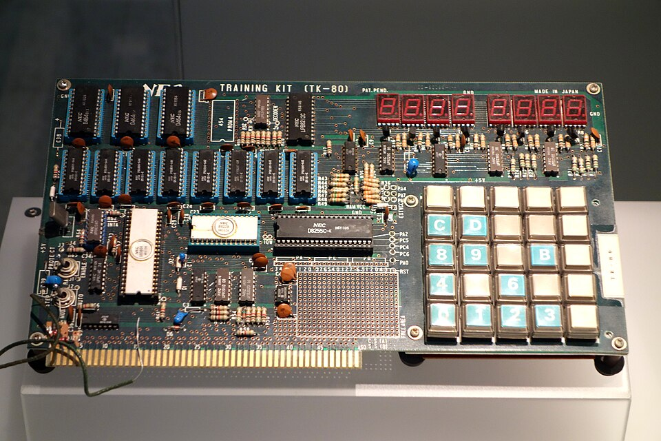
Intel 8080 Microprocessor Architecture (1976) Gremlin's Blockade ran on an 8-bit Intel 8080 CPU (seen here in the white ceramic DIP package at lower left on a 1976 TK-80 trainer board). Because RAM chips were expensive, Blockade stored trails directly in video RAM rather than a coordinate array. Photo: Daderot (National Museum of Nature and Science, Tokyo) · Public domain (CC0 1.0) Designed by Lane Hauck, Ago Kiss, and Bob Pecoraro on an Intel 8080 microprocessor. Two players steered orthogonal arrows that left permanent solid trails behind them. There was no food and no tail removal—every tick painted a new block into video RAM until one player boxed the other in. Atari followed with Surround (1977) on the 2600.
-
8-BIT MICROCOMPUTERS
Peter Trefonas's Worm
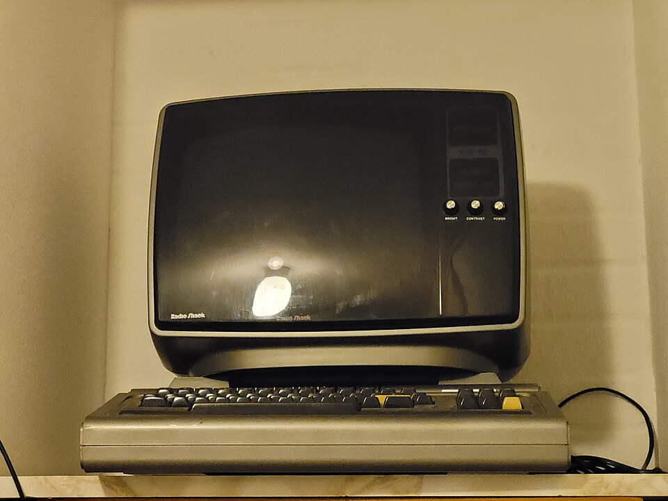
Tandy TRS-80 Model I Microcomputer (1977–1978) Distributed on audio cassette by CLOAD magazine for the TRS-80 and Commodore PET, Peter Trefonas's 1978 Worm introduced tail erasure—turning an infinite wall game into a finite, growing creature. Photo: Prolete · Public domain (CC0 1.0) Published through CLOAD magazine for the TRS-80 and Commodore PET, Worm made the crucial leap from an infinite wall to a finite, moving creature. By erasing the tail tip each tick—and only letting the body grow when the head ate numbered targets (
1–9)—it turned a two-player duel into a solo survival puzzle. -
ARCADE & CINEMA
Nibbler & Tron Light Cycles
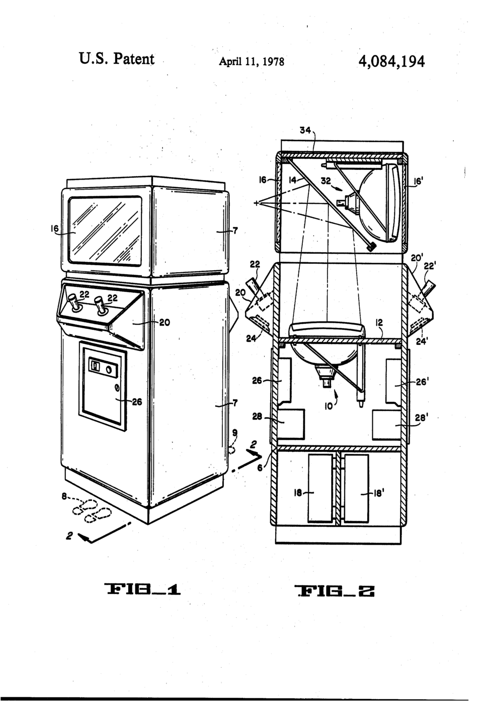
Upright Arcade Cabinet Engineering (U.S. Patent 4,084,194) Cross-section of a golden-age arcade cabinet showing the internal raster CRT, viewing bezel, coin box, and two-player control deck that housed early trail and maze games. U.S. Patent & Trademark Office / Atari, Inc. (1978) · Public domain (source) Rock-Ola's arcade cabinet Nibbler placed a growing snake inside a tight maze, becoming famous as the first video game with a nine-digit (billion-point) scoreboard. The same summer, Disney's Tron dramatized Blockade's permanent-trail duel as neon Light Cycles.
-
PC SOURCE CODE
MS-DOS QBasic Nibbles
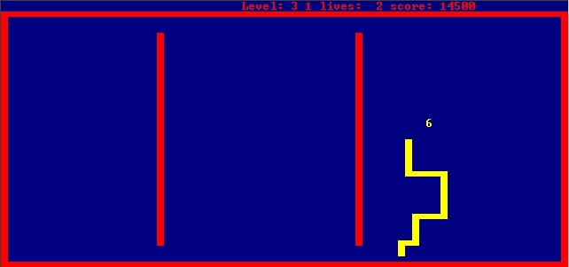
Classic Nibbles Level 3 Grid & Numbered Food Following Peter Trefonas's 1978 Worm convention, Nibbles spawned sequential digits ( 1through9) on a royal-blue 80 × 50 text-block playfield bordered by red walls. Screenshot: Matthias S. & Rudwolf · Free & Open-Source (GNU GPL)Written by Rick Raddatz and shipped as
NIBBLES.BASwith every copy of MS-DOS 5.0. Because the full BASIC source code was open on disk, millions of students learned how game loops, 2D coordinate arrays, and collision checks work by reading and modding Nibbles. -
MOBILE REVOLUTION
Nokia 6110 & 3310 Snake
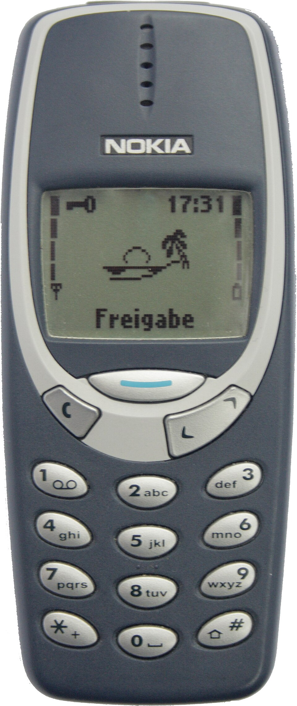
Nokia Monochrome 84 × 48 LCD & Numeric Keypad Players steered up, left, right, and down using thumb keys 2,4,6, and8on reflective green LCDs across the Nokia 6110 (1997) and Nokia 3310 (2000). Photo: Michael Brandtner · Public domain (source)Finnish engineer Taneli Armanto programmed Snake for Nokia's 84 × 48 monochrome LCD and numeric keypad (
2,4,6,8). Armanto added a split-second grace delay before wall crashes so thumb-key players could turn at the last instant, and added infrared two-player mode—shipping on over 350 million phones. -
WEB & AI LABS
Canvas, LED Grids & AI
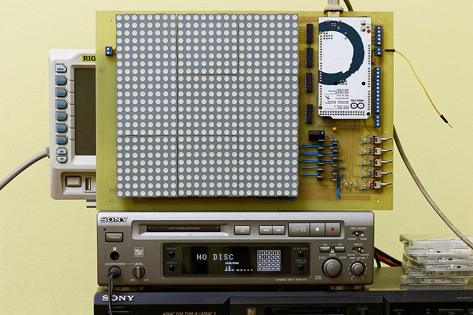
Arduino Microcontroller & Tiled 8 × 8 LED Dot Matrices On microcontrollers with only 2 KB of SRAM, students often implement Snake using a fixed circular ring buffer or a 2D countdown matrix wired directly to LED rows and columns. Photo: Retired electrician · Public domain (CC0 1.0) Today Snake is the "Hello, World!" of interactive graphics—built on HTML5
<canvas>, 8×8 Arduino LED matrices, and AI research benchmarks where reinforcement-learning agents learn Hamiltonian cycles to fill 100% of the board without trapping themselves.
Primary-Source Hardware Archive · Click any photo to enlarge
The Machines That Shaped How Snake Was Coded
Each generation of hardware forced programmers to rethink how a moving trail is stored in memory—from 128 bytes of console RAM to cassette-loaded 8-bit microcomputers and MS-DOS floppy disks.
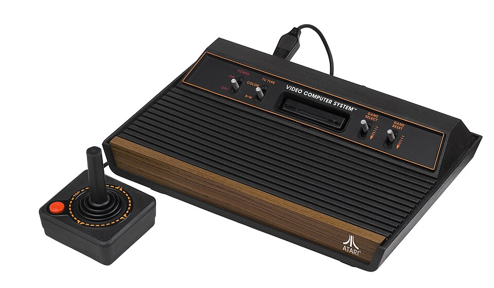
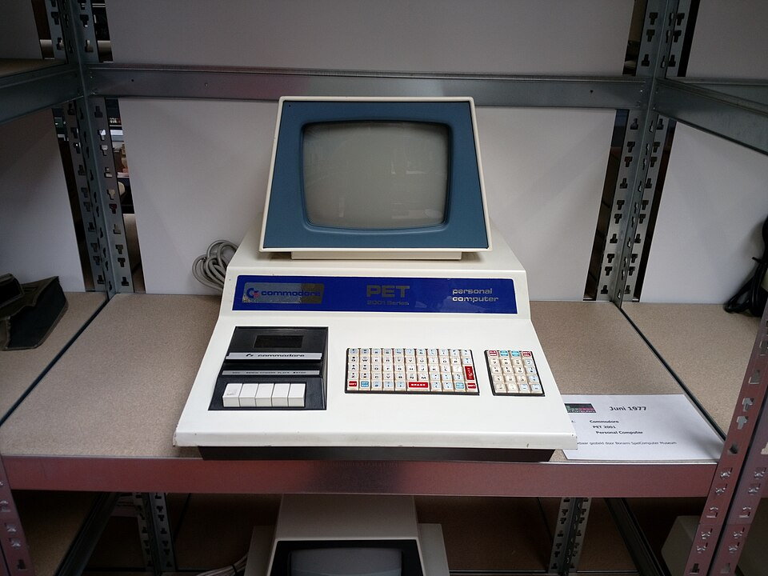
1,000 bytes) let BASIC programs POKE head characters and erase tail characters directly on the grid.
Photo: Prolete (Bonami SpelComputer Museum) · Public domain (CC0 1.0)
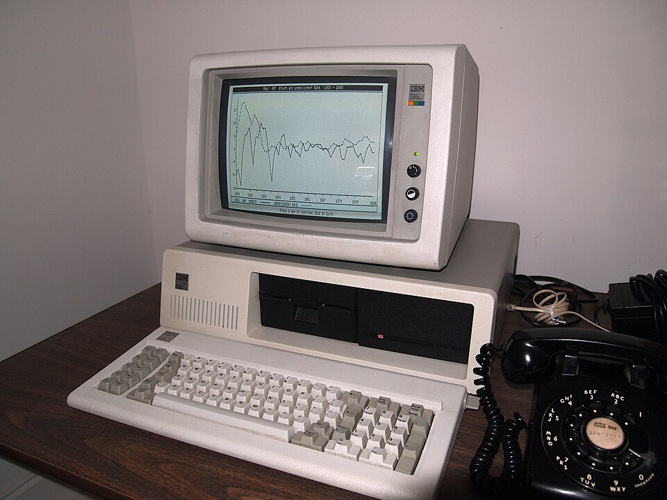
NIBBLES.BAS (1991) to store both a 2D arena array arena(row, col) and a snake body coordinate array—teaching structured programming to millions of beginners.
Photo: Fried Dough · Public domain (CC PDM / CC0)
Primary historical sources: Taneli Armanto's history of Snake and his design notes on Nokia Snake (1997).
03 / STEP LAB
Step through one tick of the game loop.
Watch a single move travel through all five operations from direction input to a newly drawn screen frame. This 7 × 7 model uses labeled (x, y) coordinates so you can verify every vector addition, boundary check, and array update before the screen redraws.
- 1 InputChoose a direction
- 2 CalculateFind the next head
- 3 CheckWall, body, or food?
- 4 UpdateChange stored state
- 5 DrawShow the new frame
7 × 7 practice board (0-indexed x, y)
Tick 0
Screen shows the last drawn frame
Before you move
Make a prediction
The head is at (2, 3), facing right. Food is at (4, 3). What will happen after one step?
Choose a prediction, then run an operation or a full tick.
What the program is doing
Waiting for a direction. Next: calculate the new head.
Stored state (memory in RAM)
- Direction (dx, dy)
- Calculated head
- Check result
- Score
- Tick interval
- Snake length
snake), head first
Next operation
Active JavaScript line in the game loop
stage: inputchangeDirection(event); // sets dx, dy
const head = { x: snake[0].x + dx, y: snake[0].y + dy };
if (wallCrash(head) || bodyCrash(head)) return gameOver();
snake.unshift(head); if (!ateFood) snake.pop();
ctx.fillRect(0, 0, 400, 400); drawFood(); drawSnake();Tip: Try two full ticks toward the red food in Scenario 1. Then click Start again and use Next operation to watch Operation 4 (Update) change the stored array in memory while the board waits for Operation 5 (Draw) to catch up! Try Scenario 4 (Tail-Chase Subtlety) to see what happens when the head moves into the square the tail tip is about to vacate.
04 / FOUR METHODS
Four ways to build Snake in code.
On screen, every version of Snake looks the same: a head advances one tile and a tail follows. Under the hood, however, programmers across eras have invented four completely different ways to represent the snake in memory depending on whether they were writing for a 1976 arcade circuit, a 1997 Nokia microcontroller, an Arduino LED matrix, or a modern browser.
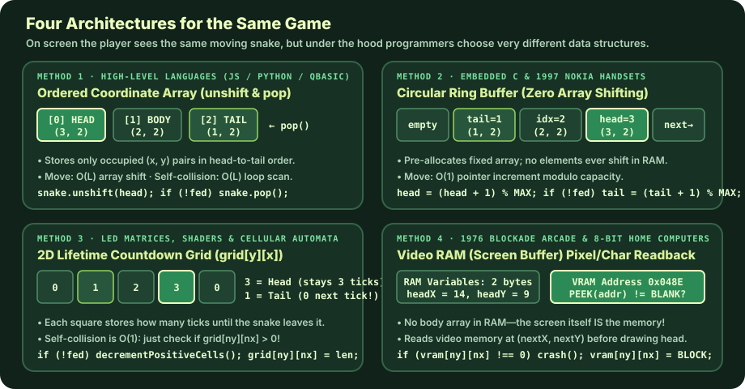
O(1) time; a 2D countdown grid stores a lifetime timer in each cell; and 1970s VRAM readback uses the screen pixels themselves as the collision database. Click to enlarge.
ClassroomOS computer science diagram · CC BY 4.0
Interactive Data-Structure Lab
Watch Three Memory Models Represent the Exact Same Move
Click Step Forward or Step & Eat Food below. The snake travels clockwise around a 5 × 5 loop while all three data structures update simultaneously:
METHOD 3 · 2D COUNTDOWN MATRIX
grid[y][x] (Ticks Remaining)
Head stamps length. Every positive number subtracts 1 on a normal step (or pauses subtraction for 1 tick when eating food!). Collision check: grid[ny][nx] > 0.
METHOD 1 · DYNAMIC COORDINATE ARRAY
METHOD 2 · CIRCULAR RING BUFFER
snake[] (unshift & pop)
Index 0 is always the head. Every element shifts right by 1 index whenever unshift(head) runs.
METHOD 2 · CIRCULAR RING BUFFER
ring[8] (Fixed RAM, Moving Pointers)
Coordinates never shift! Only headPtr and tailPtr advance modulo 8: (ptr + 1) % 8.
Code & Tradeoffs
Compare Implementation Code Across All Four Methods
Method 1 · Coordinate Array (unshift & pop)
Move: O(L) · Collision: O(L)
Where & why this method is used:
05 / UNDER THE HOOD
Four decisions every tick.
Whether you use an array, a ring buffer, or a countdown grid, every real-time Snake game is driven by a game loop—a timer that calls update() and draw() repeatedly and makes four mathematical decisions:
1 · TIME & ACCELERATION
The Heartbeat Tick
A typical browser Snake starts with setInterval(gameLoop, 100)—10 ticks per second. Each food eaten shortens the wait by 2 ms down to a floor of 50 ms (20 ticks per second): currentSpeed = Math.max(50, currentSpeed - 2).
2 · 2D VECTOR ADDITION
Calculating the New Head
Direction is stored as a velocity pair (dx, dy): Right is (+1, 0), Left is (−1, 0), Down is (0, +1), and Up is (0, −1). Because y = 0 is the top edge of computer screens, moving up subtracts 1 from y.
3 · SAFETY BOUNDARIES
Wall & Body Collisions
Before changing the snake, update() tests the proposed head (head.x, head.y). If head.x < 0 || head.x >= 20 || head.y < 0 || head.y >= 20, it hit a wall. Next, it checks if any body square occupies those coordinates.
4 · QUEUE DATA STRUCTURE
Advance Head, Conditionally Drop Tail
snake.unshift(head) inserts the new head at index 0. If head matches food, the score rises by 10, new food spawns, and snake.pop() is skipped so the snake grows by 1 square. Otherwise snake.pop() removes the tail tip.
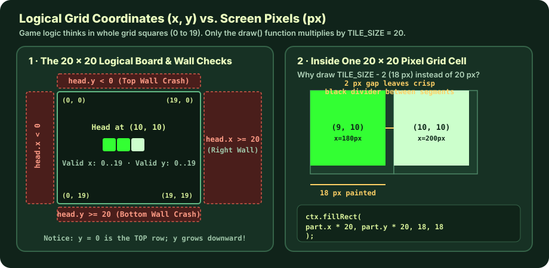
180 px; it stores whole grid indices 0..19. Only draw() multiplies by TILE_SIZE = 20 and draws an 18 × 18 px square (TILE_SIZE - 2) so adjacent body squares have a crisp 2-pixel gap. Click to enlarge.
ClassroomOS computer science diagram · CC BY 4.0
Read the complete annotated update() function (Method 1: Coordinate Array)
The body is an ordered JavaScript array of { x, y } coordinate objects. Index 0 is always the head; index snake.length - 1 is always the tail.
function update() {
// 1. Propose the next head coordinate without changing the snake yet
const head = { x: snake[0].x + dx, y: snake[0].y + dy };
// 2. Wall collision: valid grid indices on a 20x20 board are 0 through 19
if (head.x < 0 || head.x >= TILE_COUNT || head.y < 0 || head.y >= TILE_COUNT) {
gameOver();
return;
}
// 3. Self collision: does the proposed head overlap any current segment?
for (let i = 0; i < snake.length; i++) {
if (head.x === snake[i].x && head.y === snake[i].y) {
gameOver();
return;
}
}
// 4. Safe! Insert the new head at index 0 and record the direction we actually moved
snake.unshift(head);
lastDx = dx;
lastDy = dy;
// 5. Eat food (keep tail & speed up) OR normal step (pop old tail)
if (head.x === food.x && head.y === food.y) {
score += 10;
currentSpeed = Math.max(50, currentSpeed - 2);
placeFood(); // Note: no snake.pop() here, so length increases by 1!
} else {
snake.pop(); // Drop the last square so length stays the same
}
}
K–2 · Act it out (Unplugged)
Lay down three paper squares on floor tiles as head, middle, and tail. Each clap ("tick"), place a new square in front of the head and pick up the last tail square—unless the new head lands on a red beanbag ("food")!
Grades 3–5 · Coordinate Mapper
Write the snake's three (x, y) coordinates before and after moving Up, Right, Down, and Left. Explain why moving Up subtracts 1 from y while moving Down adds 1 to y.
Grades 6–8 · Order-of-Operations Detective
Trace what happens if you move snake.unshift(head) above the self-collision loop, or if a player taps two arrow keys inside a single 100 ms tick. Test your hypothesis in Lab A below.
Grades 9–12 · Algorithm Redesign
A naive recursive placeFood() picks random squares until it misses the snake. What happens when 395 of 400 squares are full? Use Lab B below to benchmark rejection sampling against an empty-square filter.
06 / BUG CLINIC
What breaks if you change one line?
Every programmer who builds Snake from scratch encounters a few classic pitfalls. Explore two interactive engineering labs built around real bugs in Snake implementations.
Engineering Lab A · Grades 6–12
Trace the Bug: Order of Checks & the 100 ms Input Window
Select a code version below to inspect the code diff and see what happens when the next tick runs:
Reference Working Implementation
PASSES
What happens on the very next tick:
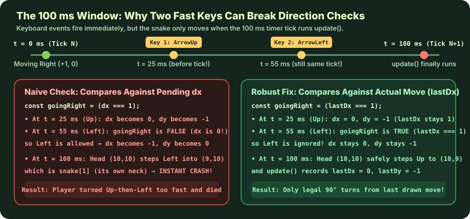
lastDx Fixes It) Because keydown events happen immediately while update() only runs every 100 ms, checking illegal 180° turns against the pending dx, dy lets a fast player turn 90° and then another 90° before the snake has moved a single square. Comparing against lastDx, lastDy (the direction of the last completed move) closes the loophole. Click to enlarge.
ClassroomOS computer science diagram · CC BY 4.0
Engineering Lab B · Grades 9–12 Challenge
Food Spawner Benchmark: Random Retry vs. Empty-Square Filter
A common beginner implementation of placeFood() picks a random (x, y) on the 20 × 20 board (400 squares) and calls itself recursively if that square overlaps the snake. At the start of a game (length 3), 397 of 400 squares are empty, so a random guess succeeds 99.25% of the time. What happens near the end of a perfect game when the snake covers almost the entire board?
Method A · Recursive Random Retry (Rejection Sampling)
Keep rolling a 400-sided die until you hit an empty square.
- Expected tries per food
- Trial average tries
- Worst single spawn (max tries)
- At 400 / 400 full board
function placeFoodNaive() {
food.x = Math.floor(Math.random() * 20);
food.y = Math.floor(Math.random() * 20);
snake.forEach(part => {
if (part.x === food.x && part.y === food.y) {
placeFoodNaive(); // retries (overflows at 400!)
}
});
}Method B · Empty-Square List Filter (Deterministic O(N) Scan)
Collect all empty coordinates first, then pick 1 random index.
- Random picks per food
- Empty squares scanned
- Worst single spawn
- At 400 / 400 full board
function placeFoodSafe() {
const occupied = new Set(snake.map(p => `${p.x},${p.y}`));
const empty = [];
for (let y = 0; y < 20; y++)
for (let x = 0; x < 20; x++)
if (!occupied.has(`${x},${y}`)) empty.push({ x, y });
if (empty.length === 0) return winGame(); // Full board!
food = empty[Math.floor(Math.random() * empty.length)];
}07 / SELF-CHECK
Test your mental model.
Can you predict what the program will do without running the code? Answer these four quick questions to check your understanding of Snake's history, data structures, and game loop.
A snake's body array is
Question 2 · Alternative Architectures
In the 2D Countdown Matrix method (grid[y][x]), each cell stores an integer representing ticks remaining before that cell becomes empty. How does the snake grow by 1 when eating food?
Question 3 · Order of Operations
Why must update() check for self-collision before calling snake.unshift(head)?
Question 4 · Input Buffering
Why must a well-engineered Snake game store lastDx and lastDy in addition to dx and dy?
Ready to build your own game loop?
Take what you learned about grid coordinates, state arrays, and frame-by-frame rendering into the next Computer Science game-dev guides.